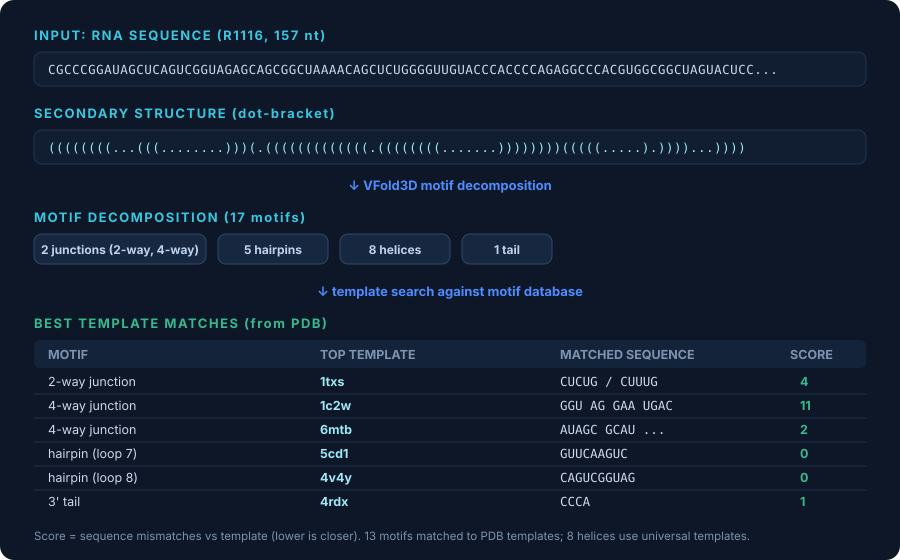
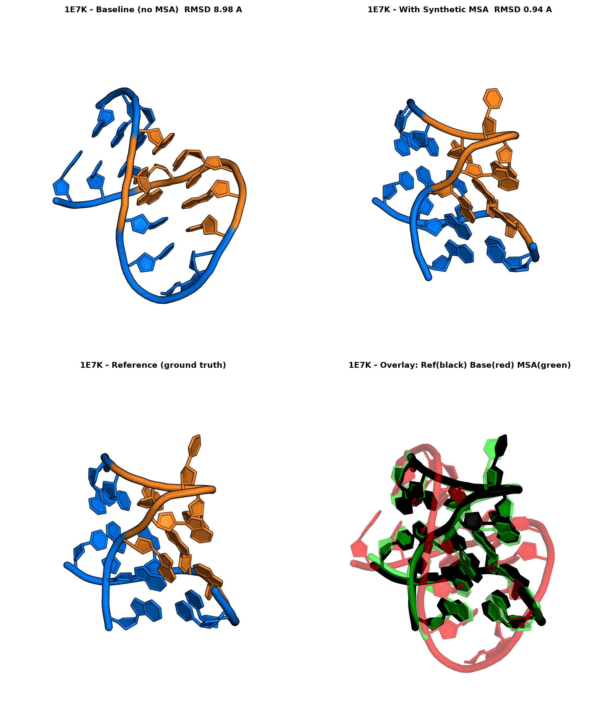
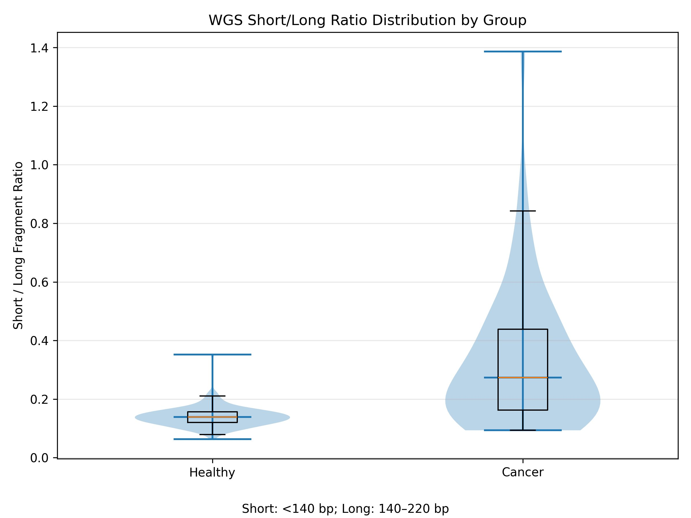

Featured Projects
Selected research and applied bioinformatics work
Projects span cancer genomics, biomarker discovery, RNA structure prediction, tool development, sequencing pipelines, multi-omics analysis, and biological machine learning.
RNAMotifDB
RNA motif database, website, and template-search tool
Built a VFold-style RNA motif database and toolset: motif extraction, sequence grouping, RMSD-based structural clustering, representative-template selection, and a template-search tool for RNA 3D modeling.
Organized 500,000+ motif structures into a searchable, clustered database with reproducible HPC build pipeline.

Template search: R1116 decomposed into 17 motifs, each matched to PDB templates (1txs, 1c2w, 6mtb, ...)
RNA motifsDatabaseTool developmentC++PythonVFold
RNA-Structure-AI
Template-guided RNA structure prediction
Modified OpenFold3 (9 source files) and Boltz-2 (2 source files) to accept RNA templates (capabilities the stock models lack), and built a secondary-structure-driven synthetic-MSA generator. Benchmarked all approaches against unmodified baselines by C1' RMSD.
Synthetic MSA improved best-case RMSD from 22.5 Å → 3.5 Å; reached sub-Ångström (0.9 Å) on favorable RNAs. Failure cases reported openly for honest evaluation.

1E7K: baseline 8.98 Å vs synthetic MSA 0.94 Å (overlay: reference black, prediction green)
OpenFold3Boltz-2RNA 3DTemplatesSynthetic MSABenchmarking
Fragmentomics Biomarker
Cancer genomics and cfDNA biomarker workflow
Built a two-stage FASTQ-to-BAM WGS pipeline (BWA + SAMtools workers on SLURM/LSF), with fragment-length extraction, 4-mer/5-mer end-motif analysis, multi-tier QC, and cancer-vs-healthy cohort comparison across Streck/EDTA tubes and WGS/HMC assays.
Processed cancer + healthy cohorts through a reproducible HPC pipeline with fragment- and motif-level QC and group-comparison visualizations for biomarker exploration.

WGS short/long fragment ratio: cancer cohort shifted higher than healthy
WGScfDNACancer genomicsBWASAMtoolsEnd motifs